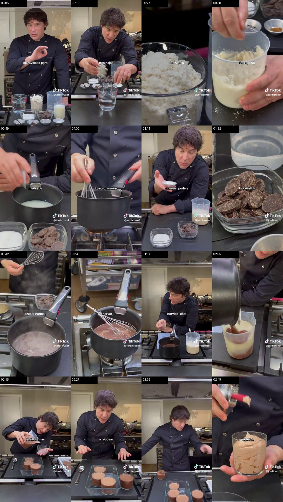
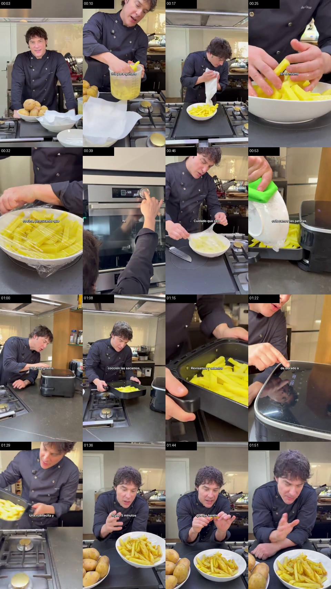
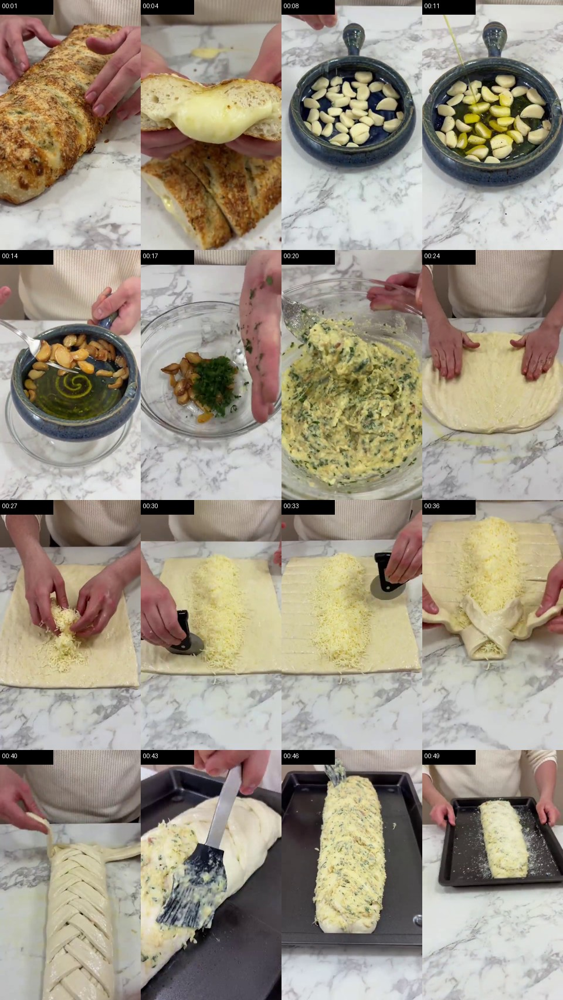
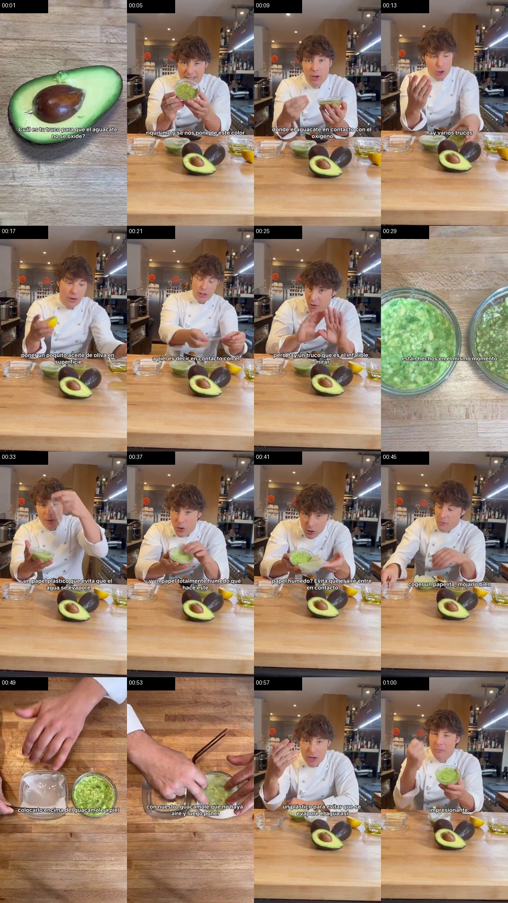

🍫 01Postres y meriendas · Postre / merienda
Cremoso / natillas de chocolate proteico
Postre o merienda fría, dulce y proteica.
#dulce#proteico#postre#nevera#batch cooking
Repositorio local de recetas extraídas de vídeos. Esta versión deja las fichas completas renderizadas en HTML desde el inicio: aunque el buscador falle, los vídeos y el paso a paso siguen visibles.

🍫 01Postres y meriendas · Postre / merienda
Postre o merienda fría, dulce y proteica.

🍟 02Guarniciones rápidas · Guarnición
Guarnición rápida con patata tierna por dentro y dorada por fuera.

🧄 03Cenas informales y entrantes · Cena informal / entrante
Masa trenzada con queso fundido y cobertura de ajo, mantequilla y perejil.

🥑 04Técnicas y trucos · Técnica / conservación
Técnica de conservación con papel húmedo en contacto y film.
| Pieza | Cómo entra en el menú | Riesgo si se fuerza |
|---|---|---|
| 🍫 Cremoso / natillas de chocolate proteico | Como postre o merienda proteica en un menú semanal. | No usar como cena principal. Tampoco conviene meterlo si el menú ya va cargado de lácteos, dulces o chocolate. |
| 🍟 Patatas fritas en airfryer con pre-cocción en microondas | Como guarnición de pollo, tortilla, hamburguesa, verduras salteadas o cena informal. | No meterla por sistema en todos los menús: puede subir mucho la carga de hidratos. Si ya hay arroz, pasta o pan, mejor alternar. |
| 🧄 Trenza de pan de ajo y queso | Como cena informal de fin de semana, entrante para compartir o plato acompañado de ensalada/crema de verduras. | No es una cena ligera. Si el menú semanal ya lleva queso, pan o masas, no la fuerces. |
| 🥑 Truco para que el guacamole no se oxide | Cuando prepares fajitas, tacos, bowls, tostadas o guacamole con antelación. | No es una receta principal. Es una técnica auxiliar de conservación. |
Ruta local: assets/videos/01_cremoso_chocolate_proteico.mp4
Postres y meriendas · Postre / merienda
Postre o merienda fría, dulce y proteica.
La vainilla y el azúcar/edulcorante se añaden en el cazo, después de fundir el chocolate y antes de incorporar la gelatina. Ahí se corrige el sabor.
Ruta local: assets/videos/02_patatas_fritas_airfryer.mp4
Guarniciones rápidas · Guarnición
Guarnición rápida con patata tierna por dentro y dorada por fuera.
La sal y las especias van al final, al sacar las patatas de la airfryer. Si echas pimentón, ajo en polvo o hierbas antes, se pueden quemar o amargar.
Ruta local: assets/videos/03_trenza_pan_ajo_queso.mp4
Cenas informales y entrantes · Cena informal / entrante
Masa trenzada con queso fundido y cobertura de ajo, mantequilla y perejil.
La sal, pimienta y orégano se añaden dentro de la pasta de ajo, mantequilla y perejil, antes de untar la trenza. Así el sabor queda repartido.
Ruta local: assets/videos/04_guacamole_no_oxida.mp4
Técnicas y trucos · Técnica / conservación
Técnica de conservación con papel húmedo en contacto y film.
No se sazona al conservar. Si preparas el guacamole desde cero, ajusta sal, lima/limón, cilantro, pimienta o picante antes de poner el papel húmedo y el film.